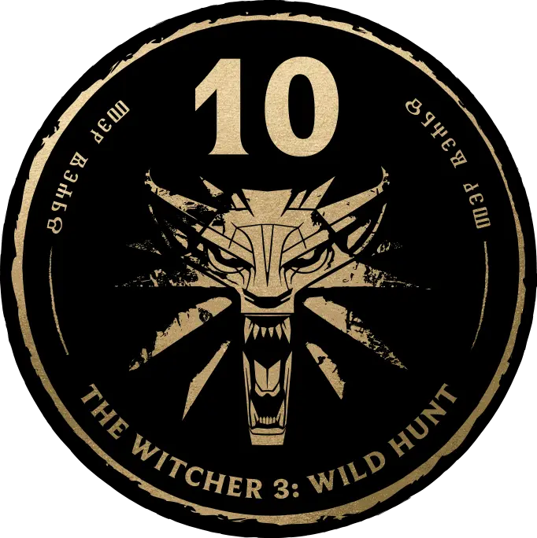

O Caminho do Lobo
Em um mundo devastado pela guerra, onde monstros espreitam nas sombras e reis tramam em salões escuros, surge uma figura solitária: Geralt de Rívia. Um bruxo — caçador de monstros mutado por alquimia e treinado desde a infância para sobreviver ao impossível.
O mundo não precisa de heróis.
Precisa de um profissional
Assuma o papel de Geralt de Rívia, um caçador de monstros, e explore o mundo aberto de fantasia sombria de The Witcher 3: Wild Hunt, um dos RPGs mais aclamados de todos os tempos. Dos pântanos obscuros de Velen, passando pela frenética cidade de Novigrad até as vibrantes ilhas de Skellige, Geralt terá que buscar Ciri, sua filha adotiva, antes que as aparições da Caçada Selvagem tomem para si o poder ancestral da jovem.
Mundo Injusto
O Continente é um mundo moralmente ambíguo, repleto de encontros agradáveis e confrontos terríveis, com escolhas complexas e suas consequências. Tome decisões que afetarão não só o seu futuro, mas o dos seus aliados, inimigos e de todo o resto do mundo.

{kind=link}
{kind=link}
{kind=link}